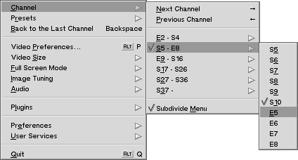
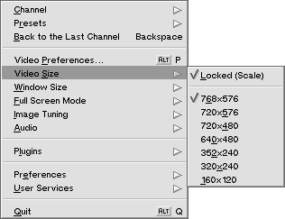
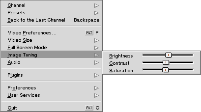
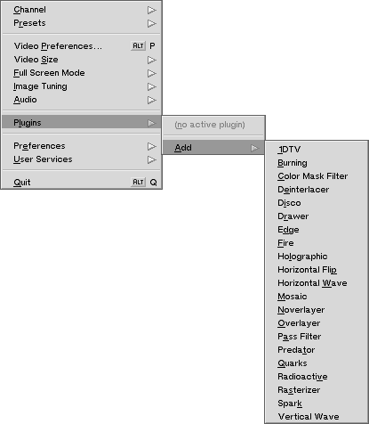

stampTV's Notice
©2000-2001, Georges-Edouard Berenger, berenger@francenet.fr
©2000, Frank Olivier, frank@diematie.sun.ac.za
©1991-1999, Be Incorporated, All rights reserved
Hamburg, July 3rd, 2001.
What is stampTV?
stampTV is an application for watching TV with your BeOS supported video capture card, possibly while
doing something else. It now includes quite a few features: fullscreen, overlay support, named presets, audio control, wheel support
and complete keyboard control.
Version 3 introduces plugins support. For more details, please see the
general documentation and the
developer's documentation.
New!!! v3.0
Requirements
For obvious reasons, you will need a TV capture card supported by BeOS R5 (with or without third party drivers).
Who are the authors?
stampTV is a derivation of Be's CodyCam, started by Frank Olivier.
Because he of his studies (that's what he says... :-), he didn't have the time to maintain it anymore,
so he requested that I (Geb) take over stampTV and Mosaic.
A number of other developers/users have contributed to stampTV. In (apparent) chronological order:
Frank Olivier, Christopher Lenz, Eugenia Loli, Stephan Assmus, Sylvain Tertois, Alexander Wilkens,
Georges-Edouard Berenger, Attila Lendvai, Bruno G. Albuquerque and possibly others:
let me know if you feel you should be in that list!
Others contributors should be thanked for their help. They have provided answers and/or sample code:
How does it work?
Launch stampTV. Simply double click on the application, where ever it is! A window should appear with TV content in it.
- Left-clic inside the window and drag around
To move the window around.
- Double left-clic inside the window
To switch to/from full screen mode (or press the Tab key).
- Middle-clic inside the window and drag in a Tracker's window or on the Desktop
To capture a frame and save it as a file. Press the Control key while doing that, and you'll be
able to select which image format will be used.
- Righ-clic inside the window
To access the popup menu. See below for a detailed description of this popup menu.
- Resize the window as you wish
You can freely resize the window to your favorite size, provided the TV card can support this resolution.
- Zoom the window
This will ask stampTV to find the closest ideal window size the TV card can support. If the current size is
already among the natural sizes supported, then it will select the next one.
- Press the left & right arrow keys
To view the next or the previous channel.
- Press the up & down arrows, or Alt-M.
To control the volume: increase, decrease or mute.
- Press the 'return' key
To create or edit the current preset. You'll be able to choose a name and a keyboard shortcut for that preset.
- Press the 'Delete' key
To delete the current preset.
- Press the '+' and '-' keys
To select the next or the previous preset.
Here is a quick overview of stampTV's features as found in that popup menu:
- Channel
Will allow you to select which channel you want to watch, identified by channel codes.
Next Channel and
Next Channel will do what you expect.
Subdivide Menu
will split the channel menu in several submenus somewhat improving the channel navigation.

- Presets
Gives quick acces to the named channel presets, as well as the creation and edition of those presets.
Those functions are accessible with simple keystrokes without using any modifier such as Alt,
Option or Control.
Next Preset and
Next Preset will do what you expect.

- Back to the Last Channel
Brings you back to the last channel you were viewing before before you last changed to an other one.
Very handy to switch between two programs.
- Video Preferences
To change your TV card's settings using BeOS's video preferences panel.
Please refer to BeOS's documentation for more details.
- Video Size
To select the window's size among your TV card's ideal resolutions.

- Full Screen Mode
To select which resolution & refresh rate should be used in full screen mode.
The video size will be automatically selected to be as big as possible in the selected mode.
By using the Video Size menu while in full screen size, you can override this automatic choice.

- Image Tuning
To control the image quality. Provides direct access to the brightness, contrast and color saturation settings.

- Audio
To control the TV's volume. First, make sure that you have selected the right audio control. Use the
Source sub-menu
to tell stampTV what controls the TV's audio. It is likely to be the "Line" or "Line out" item. That depends on your system.
The Mute item allows you to mute the selected source, while
Volume gives fine control on the volume. You can directly interact with the slider
while the popup menu is shown: just go over the slider and press the mouse button!
The Volume Up and Volume Down
item allow you to do the same with the keyboard as well: use the up & the down arrows.

-
New!!! v3.0
In the Plugins submenu, you will find:

- Drawer and Overlayer
The top part of the submenu shows which plugin(s) is(are) active. In the shown case, the "Drawer"
and the "Overlayer" plugins are active.
- Configure
If the plugin has a configuration panel, then this item will be present in the plugin's submenu.
Select this item to access the plugins configuration window. It will also be shown is you simply select
the plugin's menu item itself.
- Remove
Allows you to deactivate the designated plugin.
- Add
This submenu shows which plugins are available. Select the plugin you wish to activate, and it will be added after the last
currently active plugin. There is currently no way to reorder plugins, apart from removing them and re-adding them in the wished
order.

- In the Options allows you to control which options are activated:
- No Tab
To choose wether stampTV's window should have a title tab.
- On Top
Will force or not stampTV's window to remain above all others.
- Window can't be Moved Offscreen
Will force stampTV's window to always remain entirely in the monitor's frame.
- Full Screen
To use the entire monitor's surface to watch TV.
Press Tab or Escape to return to the normal window mode.
- Disable Screen Saver
New!!! v3.0
This options will prevent BeOS's screen saver to be activated while stampTV is running.
Note that BeOS's ScreenSaver settings are not changed: stampTV simply simulates some user activity
every once in a while to prevent the activation of the screen saver module.
- Open stampTV's Notice
To (re)read this documentation.
- Visit stampTV's Web Site at BeBits
Opens you default web browser to stampTV's page at BeBits.
- Quit
Have a guess!...
- That's it!
Frequently Asked Questions
Many users make request for new functionnalities, or request changes. This section aims at explaining
why stampTV works the way it does...
- Is stampTV working in overlay mode?
It is very easy to tell if stampTV successfully managed to use an overlay: Change the channel and see how the channel's
name is displayed. If the name appears inside a solid rectangular black frame, then overlay is not active.
If the green letters appear directly over the TV image, then overlay is in use.
- Can you implement Teletext?
Teletext support requires some driver level support, which is not implemented in Be current Bt848 driver as far as I know.
Even if it was, that would most probably be a good topic for an other application!
- What about remote controlers?
Support for infra red (IR) controllers is provided through BeInControl.
For detailed support, please refer to the BeInControl's documentation.
Support for remote controllers such as the one your video card has is unlickely to ever happen. This requires quite a lot
of detailled information on the card itself, and support would be limited to a subset of the TV cards...
- Why can't you resize stampTV's window in realtime like BeOS's TV does?
In short, because we don't cheat and make no compromise on image quality! When you resize stampTV's window, it asks to the
TV card to deliver the best image quality it can at this resolution. This change requires a break in the image stream
the time the entire media nodes chain adapts to the new resolution (old buffers are deleted, new are created...).
This operation is expensive and can not be done without
stoping the video stream (which in turn stops the audio stream...).
How does BeOS's TV then? It just doesn't! It negociates a resolution when it starts and sticks to it until the application
quits. When the window is resized, the image is dilated or shrinked as necessary, wasting CPU power & image
quality... This looks good while you resize the window, but if you look closely, well, it is not very satisfactory!
- Can't you make of stampTV a replicant?
Interesting request. Versions 2.1 & 2.2 bring essential code changes which should make this easy now:
everything is now handled by the view itself, leaving next to nothing into the BApplication class, and only
what is strictly necessary inside the BWindow class. Preferences should work as well. Want to finish replicant support?
If so, get in touch with me as soon as possible to be sure to synchronise your efforts!
StampTV's License
StampTV's core functionnality is based on a Be Sample Code, if mentioned in the corresponding file.
Redistribution and use in source and/or binary forms, with or without
modification, are permitted provided that the following conditions are met:
- You comply with the Be Sample Code License (included below) if you
use any of the files mentionning a copyright from Be Incorporated.
- Redistributions of source code must retain the following copyright
notice, this list of conditions, and the following disclaimer.
- Redistributions in binary form must reproduce the following copyright
notice, this list of conditions, and the following disclaimer in the
documentation and/or other materials provided with the distribution.
- The name of the author may not be used to endorse or promote products
derived from this software without specific prior written permission.
© 2000, Frank Olivier, All Rights Reserved.
© 2000-2001, Georges-Edouard Berenger, All Rights Reserved.
THIS SOFTWARE IS PROVIDED BY THE AUTHOR "AS IS" AND ANY EXPRESS OR
IMPLIED WARRANTIES, INCLUDING, BUT NOT LIMITED TO, THE IMPLIED WARRANTIES
OF TITLE, NON-INFRINGEMENT, MERCHANTABILITY AND FITNESS FOR A PARTICULAR
PURPOSE ARE DISCLAIMED. IN NO EVENT SHALL THE AUTHOR BE LIABLE FOR ANY
DIRECT, INDIRECT, INCIDENTAL, SPECIAL, EXEMPLARY, OR CONSEQUENTIAL DAMAGES
(INCLUDING, BUT NOT LIMITED TO, PROCUREMENT OF SUBSTITUTE GOODS OR SERVICES;
LOSS OF USE, DATA, OR PROFITS; OR BUSINESS INTERRUPTION) HOWEVER CAUSED
AND ON ANY THEORY OF LIABILITY, WHETHER IN CONTRACT, STRICT LIABILITY, OR
TORT (INCLUDING NEGLIGENCE OR OTHERWISE) ARISING IN ANY WAY OUT OF THE USE
OF THIS SOFTWARE, EVEN IF ADVISED OF THE POSSIBILITY OF SUCH DAMAGE.
We will be glad to hear about your bug reports, problems, comments, flames, suggestions...
You can mail us directly : Georges-Edouard Berenger
(current maintainer)
or Frank Olivier (the original author).
stampTV is provided with source code for anyone to play with. If you want to contribute
with any improvement or bug fix, please let us know!
We will see if it makes sence for the official distribution.
Please, before you do any major work on stampTV's source code, why don't you drop us a note
to be sure efforts are not duplicate? That will prevent frustration for everyone! Everyone hates it when one
discovers that what he has just written is already in the works...
Be Sample Code License
Copyright 1991-1999, Be Incorporated.
All rights reserved.
Redistribution and use in source and binary forms, with or without
modification, are permitted provided that the following conditions
are met:
- Redistributions of source code must retain the above copyright
notice, this list of conditions, and the following disclaimer.
- Redistributions in binary form must reproduce the above copyright
notice, this list of conditions, and the following disclaimer in the
documentation and/or other materials provided with the distribution.
- The name of the author may not be used to endorse or promote products
derived from this software without specific prior written permission.
THIS SOFTWARE IS PROVIDED BY THE AUTHOR "AS IS" AND ANY EXPRESS OR
IMPLIED WARRANTIES, INCLUDING, BUT NOT LIMITED TO, THE IMPLIED WARRANTIES
OF TITLE, NON-INFRINGEMENT, MERCHANTABILITY AND FITNESS FOR A PARTICULAR
PURPOSE ARE DISCLAIMED. IN NO EVENT SHALL THE AUTHOR BE LIABLE FOR ANY
DIRECT, INDIRECT, INCIDENTAL, SPECIAL, EXEMPLARY, OR CONSEQUENTIAL DAMAGES
(INCLUDING, BUT NOT LIMITED TO, PROCUREMENT OF SUBSTITUTE GOODS OR SERVICES;
LOSS OF USE, DATA, OR PROFITS; OR BUSINESS INTERRUPTION) HOWEVER CAUSED
AND ON ANY THEORY OF LIABILITY, WHETHER IN CONTRACT, STRICT LIABILITY, OR
TORT (INCLUDING NEGLIGENCE OR OTHERWISE) ARISING IN ANY WAY OUT OF THE USE
OF THIS SOFTWARE, EVEN IF ADVISED OF THE POSSIBILITY OF SUCH DAMAGE.
Known bugs & problems
- When switching between workspaces with different color depth when overlay is in use, you may get "dirt" on the screen
which you can wipe out by moving a window around.
- Resizing the window (or zooming it) will cause a short audio interruption. This is normal: the connection
with the media node is cut and re-established with buffers of the adequate new size. This garanties that the image
quality is always as good as possible because the driver always provides an image of the right side (no scaling is
ever done by the app server, unlike with TV).
To do (help & suggestions are welcomed!)
- Replicant support.
- Support for more remote controllers.
- A remote controler plugin.
- A mosaic plugin to "watch" different channels at once.
- More plugins.
History
v3.0b5 (July 3rd, 2001)
- Once again, changed the way parameterweb objects are handled. Added Continuous parameters support.
- Improvements for plugins support (see plugins for more details).
- Fixed the license: includes the Be Sample Code License (as it should have since the beginning),
adds the stampTV License and the stampTV Video Plugin License (in the plugin's notice).
v3.0b4 (March 30th, 2001)
- Changed frame grabbing to be thread safe & to capture the image as it is after plugin processing.
- Updated the documentation.
v3.0b3 (March 28th, 2001)
v3.0b2 (March 26th, 2001)
- Fixed PAL-M workaround (v2.3.1 fix).
- Added Sean Long's option to disable screen savers while stampTV is running.
- Plugins specific changes: refer to the separate documentation for details!
v3.0b1 (March 20th, 2001)
v2.3.1 (March 22nd, 2001)
- Fixed the PAL-M workaround.
v2.3 (March 20th, 2001)
- Added the "Image Tuning" menu (Contrast/Saturation/Brightness).
- Added BeInControl support for IR control. You'll find a BeInControl configuration file.
For information about BeInControl, please see its own documentation.
- Improved clic handling for draging & fullscreen switching.
- Fixed a bug when switching workspaces.
- Prepared support for plugins (see upcoming stampTV v3.0).
- Improved/fixed frame grabing to support 16 bits color modes.
- Fixed many memory leaks.
- Limit video size for NTSC. Added fallback to lower video sizes when connection fails.
- Added channel, volume & mute displays.
- Added menu items which will remind users of keyboard shortcuts to change channels, presets & volume.
- Added audio control: Alt-M for mute, Up & Down arrows to raise or lower the volume.
- Use the popup menu to select which audio output your card uses (probably "Line" or "Line out"). You can
also use the volume slider which is shown inside the popup menu! For that, right click and release the mouse
to let the menu open, then go over the slider, left click on it and drag!
- Now identifies the parameters by the Kind, and no more by their UI name.
- Made slight changes to overlay support.
- Added a bug-report-generating script to help feedback.
- Added Bruno G. Albuquerque's work around a bt848 driver bug in PAL-M mode. Made some parts of code more generic
to make implementation cleaner.
- Added the "Back to the Last Channel" option.
- Improved smoothness when moving the window by draging its content.
- Fixed a full screen bug when not in the first workspace.
- Changed wheel action: It will go to the next or previous preset (not channel), unless you press the shift key, or have
caps lock activated.
- Implemented overlay support. This reduces CPU usage dramaticaly, while providing better performance.
The motion is extremely smooth. Note that your video card's driver might not support hardware overlay (yet).
In that case, you should be able to use stampTV nevertheless, just as with previous versions,
possibly taking benefit from the next improvement!
- stampTV now tries several color depths, in particular, the current one to improve efficiency.
This makes a big difference when overlay is not in use.
- Improved smoothness when moving the window by draging its content.
- Fixed a full screen bug when not in the first workspace.
- Changed wheel action: It will go to the next or previous preset (not channel), unless you press the shift key, or have
caps lock activated.
v2.2 (December 3rd, 2000)
- Fixed hangs & crashes when using the video preferences window.
- Improved the way stampTV quits, and hopefully solved some rare crashes. Strangely enough, this is a very
tricky problem! Be very carefull if you want to change this part of the code!
- stampTV is no more a BDirectWindow which should make it compatible with more video cards. Moreover, it allows you to
create & edit presets as well as use the popup menu even while in full screen mode.
This also provides a better independance on the window type: an other step for the replicant support!
(Note: the important BDirectWindow methods where never used...)
- You can now choose the full screen resolution. stampTV will automatically use the best TV resolution, but you
can choose an other one if you wish.
- Fixed a number of full screen related issues.
- Full screen state is now saved & restored.
- A double click in the window will switch the full screen mode.
- Continued the clean up a little bit.
v2.1 (November 22nd, 2000)
- Added detection of your TV card & your video card abilities. The window size is now limited
by the TV card abilities. The full screen size is now determined dynamically: it is the biggest size
supported by both the TV card & the video card. That resolution should provide the best full screen
results.
- Implemented intelligent zooming: you'll switch between the different ideal window sizes, that is,
the window sizes which are best supported by your TV card. You can also access each of those sizes
directly.
- Added quick access to this documentation and to stampTV's website.
- Cleaned up/rearranged the source code. Removed many bugs & improved many internals.
Main classes are now split to improve readability. Simplified many things.
This work prepares replicant support a huge deal!
- Frames are now named after the channel they come from.
v2.0 (November 13th, 2000)
- Maintenance now officially done by Geb.
- Cleaned up the source code a little bit. Removed a few bugs.
- Improve presets edition.
- Removed the "Avoid Focus" option, because it conflicted with keyboard shortcuts and had
other unpleasant side effects.
- Wrote this documentation.
v1.9 Geb improved the presets:
- Presets can be assigned to functions keys and to letters.
- It is easier to select a shortcut for a channel.
- Because letters can now be assigned to presets as shortcuts, you now must use the tab key to
toggle the full screen mode. A reminder will help users when they try to use the old method.
v1.8 Attila Lendvai added the following improvements:
- You can move the window by pressing the left mouse button inside the TV image and moving the mouse
around.
- You can change the channel your mouse's wheel.
- You can save a frame by dragging the image from the TV screen to any folder (or to the desktop)
with the middle mouse button. (If you drag the image with the left control key held
down, you can choose the image file format. The default is TGA.).
- Avoid focus: It's very annoying that at a workspace switch stampTV becomes the active
window, even if it was not the active window before the switch. The Avoid Focus option on
the menu disables the stampTV window from ever grabbing the focus.
v1.7 Geb added preset channels.
- You can now create & modify named presets which you can recall with the popup menu
or using the function keys.
v1.6.2 by Alexander Wilkens.
- New preference class. All preferences are now saved.
v1.6.1
- Full screen will now only be full screen in one workspace...
Handy if your boss walks past.
- Some other bug fixes.
v1.6 by Sylvain Tertois
- Implemented a working full screen mode.
v1.5
- A keep-the-window-on-top-of-other-windows option has been added.
- All settings are now saved.
v1.4 by Stephan Assmus
v1.3
- Added a 'Window can't be moved offscreen option'.
- Made bug fixes.
v1.2
- Window position and size are now saved when stampTV exits. (in ~/config/settings/stampTV.preferences)
- You can no longer move stampTV offscreen...Useful, probably.
- Eugenia Loli suggested a Quit option on the popup menu.
v1.1
- Christopher Lenz, media kit expert, was kind enough to add channel selection code. Right-click on the
TV image to select a channel from the popup menu
- Those up and down arrow keys do something now.
- stampTV's window can now be tab-less.
v1.0
- Original release by Frank Olivier.